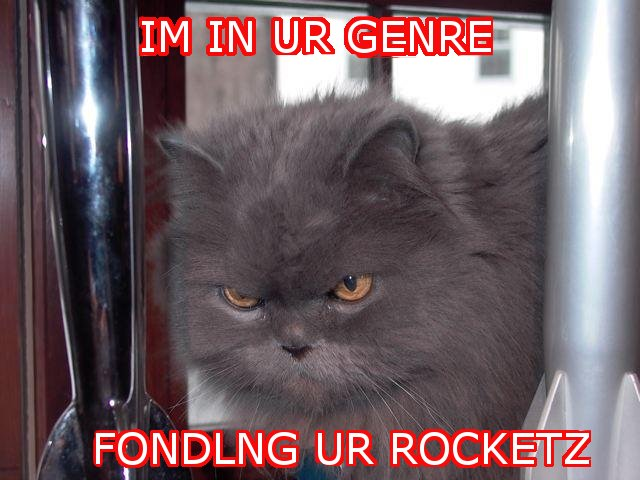

|
|
O HAI IN UR GENRE AGAIN

photo credit, once again: Holly Black/Kelly Link/Gavin Grant model: Holly Black's cat
Cory and I made the Hugo Ballot for True Names!
There's also a sort of secret thrill in seeing works you critiqued on the ballot -- "Little Brother" and "Pride and Prometheus" in this case, and earlier stories in the series of which "The Political Prisoner"(which, by the way, rocked) was a part. And it is fun to be on a ballot with Scalzi and Paolo and Mary Kowal and Ted Chiang and Aliette de Bodard, GVG and Ellen and Lou and Sheila and Nick and so on.
Congratulations to all the nominees!
Posted by benrosen at March 20, 2009 09:22 AM | Up to blogCongrats!
Posted by: Charles Tan at March 20, 2009 01:33 PMWoo-hoo! Congratulations!
Posted by: Jed at March 20, 2009 03:53 PMAwesome--congratulations!! :)
Posted by: Em Tersoff at March 20, 2009 04:14 PMFantastic!
Posted by: Dan P at March 20, 2009 11:55 PMThankee kindly! :-)
Posted by: Benjamin Rosenbaum at March 21, 2009 07:36 AMYou critiqued "Pride and Prometheus"? That must have been outside of Sycamore Hill, right? Because I critiqued it there, and you weren't there that year.
Yeah, John sent it to me: he said my Jane Austen story (the previous Syc Hill -- I'm sure you recall it fondly :-) ) -- had inspired him to go there.
Posted by: Benjamin Rosenbaum at March 31, 2009 05:15 PM